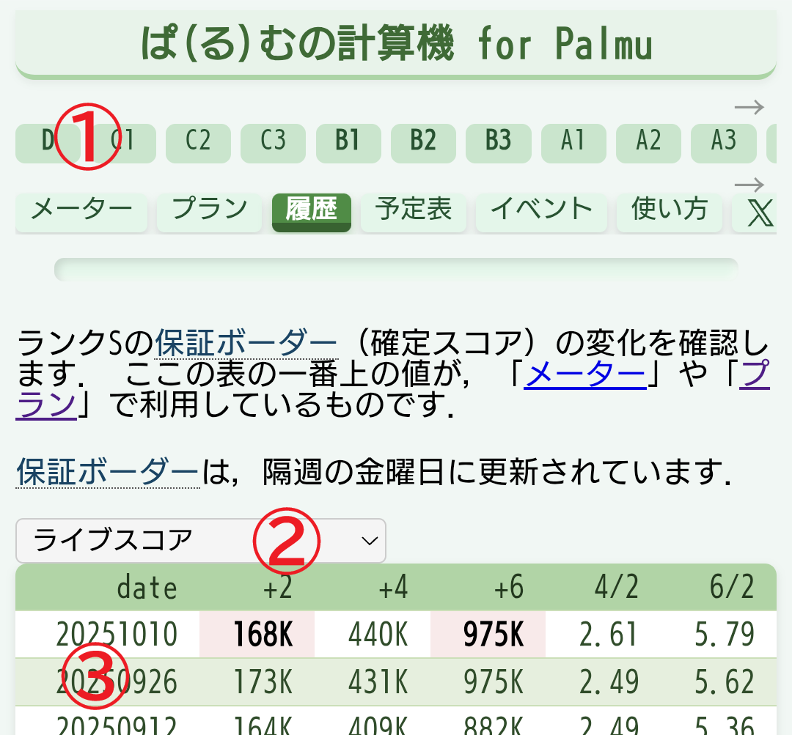

保証ボーダーは，隔週の金曜日に更新されています．

- 最初に一番上のタブから，ランクを選択してください．
- 出力形式を選択してください．ライブスコアとコイン数のどちらかを選択できます．
- 日付をタップすると，その日の確定スコアの情報がコピーできます．
ライブスコアからコイン数の算出方法は，２種類あります．どちらの方法でも，コメント数や視聴人数などの影響により若干の誤差が生じます．参考値としてご利用ください．
- 改良モデル[標準]: 調査により得られたデータをもとに，より正確にコイン数を推定します．詳細は，「ライブスコアの算出式について」を参照してください．
- 従来モデル[÷3]: ライブスコアを 3 で割った値をコイン数とします．
+2列， +4列， +6列は，それぞれ， +2, +4, +6 の保証ボーダー（確定スコア）の数値です． K がついている数値は，1/1000 の値を表示しています． 詳細な説明は，こちらをご覧ください． 赤背景は，前回の値よりも小さくなっていることを表します．
4/2列， 6/2列は， 保証ボーダーの比を表しています． 例えば，4/2 は， +4 を +2 の値で割った値です．
注意事項 謝辞2025/07/04 以前のデータは，ぺんちゃん 様が投稿された情報を元に作成しています． 貴重なデータを公開してくださり，心より感謝申し上げます．
ご参考- 【重要なお知らせ】ユーザーランクと配信ダイヤのアップデートについて (2025/07/25, 11ランクから14ランクに変更)